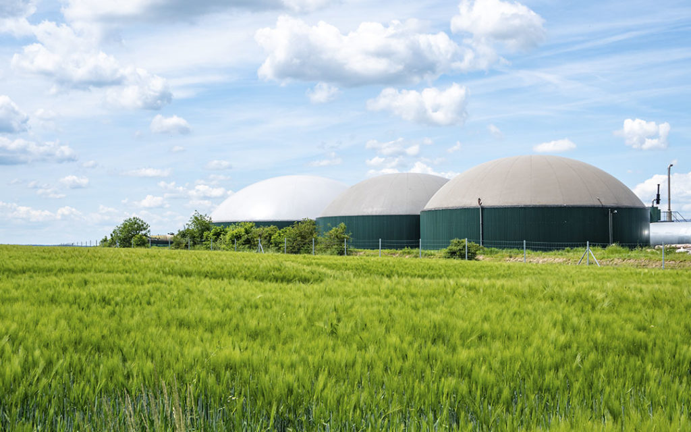
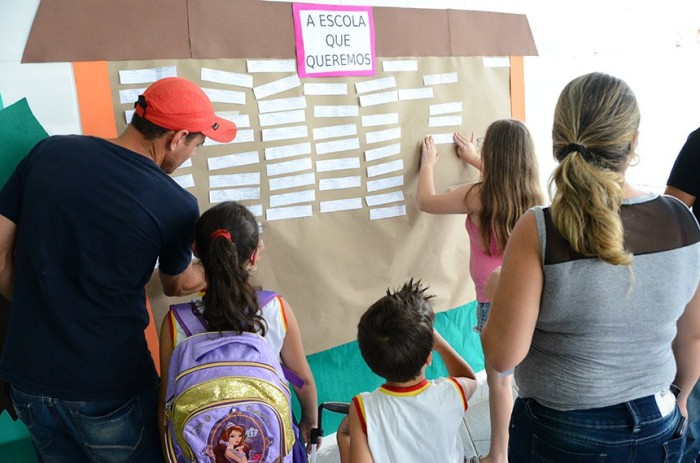

Sustentável🏭
Biometano no Brasil com uma Alternativa Energética Sustentável e Lucrativa
O biometano, um subproduto do processamento de biogás, está se consolidando como uma alternativa energética promissora no Brasil. Com o potencial de transformar resíduos orgânicos em energia, o biometano oferece uma solução sustentável e econômica para as empresas que buscam reduzir sua pegada de carbono e otimizar custos operacionais.
A produção de biometano no Brasil tem demonstrado um crescimento notável, com um aumento de 82% no número de unidades em operação em 2022, totalizando 20 plantas. Este avanço é um reflexo do enorme potencial que o país possui para a produção deste combustível renovável, dada a sua vasta disponibilidade de biomassa e resíduos agroindustriais.
Investir em biometano não é apenas uma jogada ambientalmente responsável, mas também uma estratégia inteligente de negócios. As empresas que adotam o biometano podem se beneficiar de incentivos fiscais, além de se posicionarem como líderes em sustentabilidade no mercado. Além disso, o uso do biometano pode significar uma redução significativa nos custos de energia, uma vez que é uma fonte local que diminui a dependência de combustíveis fósseis e a volatilidade de seus preços.
O setor de biogás e biometano no Brasil já movimenta cerca de R$ 40 bilhões, com expectativas de crescimento contínuo. A transição energética para fontes mais limpas e renováveis é uma tendência global, e o Brasil, com sua capacidade de produção de biometano, está bem posicionado para ser um dos líderes neste movimento.
A implementação do Programa Metano Zero pelo governo federal é um exemplo de como o país está direcionando esforços para aproveitar o potencial do biometano. O programa visa tratar resíduos urbanos e rurais para gerar biometano, proporcionando benefícios tanto para o setor industrial quanto para o meio ambiente.
Além dos benefícios econômicos e ambientais, o biometano também contribui para a qualidade de vida da população. Ao reduzir a emissão de dióxido de carbono e metano na atmosfera, o biometano ajuda a frear as mudanças climáticas e promove uma economia mais verde.
Diante desse cenário, fica evidente que investir em biometano é uma decisão estratégica para empresas que visam não apenas o lucro, mas também a responsabilidade socioambiental. O biometano representa uma oportunidade de alinhar os objetivos empresariais com as demandas por um futuro mais sustentável.
Educação📚
O Novo Plano Nacional de Educação e o Desafio da Equidade
O Brasil se encontra em um momento decisivo para a educação com a aproximação do término do atual Plano Nacional de Educação (PNE) e a formulação do próximo. O PNE vigente, que se encerra em junho de 2024, foi marcado por uma execução insatisfatória de suas metas, com apenas 40% de realização efetiva, segundo o Instituto Nacional de Estudos e Pesquisas Educacionais Anísio Teixeira (Inep). Este cenário reflete não apenas os desafios impostos pela pandemia da COVID-19, mas também cortes orçamentários significativos que impactaram diretamente a qualidade e a acessibilidade da educação no país.
Especialistas apontam que o novo PNE deve priorizar a superação das desigualdades educacionais que são profundamente enraizadas na sociedade brasileira. A discrepância na infraestrutura escolar entre bairros de maioria branca e de maioria negra, bem como a disparidade no investimento por aluno, são indicativos claros da necessidade de uma reformulação estratégica que promova a equidade educacional.
A audiência pública da Comissão de Educação (CE), realizada em maio de 2023, destacou a urgência de um PNE que não apenas estabeleça metas ambiciosas, mas que também ofereça estratégias de financiamento e acesso à aprendizagem capazes de diminuir as desigualdades estruturais. O senador Flávio Arns, ao citar dados alarmantes sobre a trajetória educacional de estudantes negros de menor renda, reforçou a necessidade de um plano que atenda às demandas de todos os segmentos da população.
O novo PNE, que definirá as diretrizes para o período de 2024 a 2034, enfrenta o enorme desafio de transformar o panorama educacional brasileiro. Para isso, é essencial que o plano seja construído com base em um diálogo aberto e participativo, envolvendo especialistas, representantes de órgãos públicos e da sociedade civil. Somente através de uma abordagem colaborativa será possível criar um PNE que reflita as reais necessidades da educação no Brasil e que promova um futuro mais justo e igualitário para as próximas gerações.
Em resumo, o novo PNE precisa ser mais do que um documento de intenções; ele deve ser um compromisso efetivo com a educação de qualidade para todos. Isso implica em reconhecer e enfrentar as desigualdades existentes, investir adequadamente em infraestrutura e recursos, e garantir que cada criança e jovem brasileiro tenha a oportunidade de aprender e prosperar em um ambiente educacional que favoreça seu pleno desenvolvimento.
Política🗳
Decisão Judicial Controversa sobre a Prisão de Gusttavo Lima e o Bloqueio de Seus Bens
Em uma reviravolta surpreendente, o Tribunal de Justiça de Pernambuco decretou a prisão do cantor Gusttavo Lima, um dos nomes mais proeminentes da música sertaneja no Brasil. A decisão, que também incluiu o bloqueio de R$ 3,3 milhões em bens do artista, é parte das investigações da Operação Integration, que apura um suposto esquema de lavagem de dinheiro envolvendo jogos de azar.
A juíza Andrea Calado da Cruz, responsável pela 12ª Vara Criminal do Recife, assinou a ordem de prisão preventiva, destacando a necessidade de garantir a ordem pública e a aplicação da lei. Além do bloqueio financeiro, foram suspensos o passaporte e o certificado de registro de arma de fogo do cantor, medidas que visam impedir uma possível fuga e garantir a presença de Lima no processo judicial.
A operação, que já havia resultado na prisão da influenciadora digital Deolane Bezerra, suspeita de abrir uma empresa de apostas com capital de R$ 30 milhões, agora coloca Gusttavo Lima no centro de um escândalo que choca fãs e observadores. A influenciadora, que afirmou ter uma renda mensal de R$ 1,5 milhão, foi presa sob acusações de movimentar cerca de R$ 3 bilhões em um esquema de lavagem de dinheiro.
O envolvimento de Gusttavo Lima foi agravado pela sua associação com figuras centrais da investigação, que atualmente estão foragidas. A justiça destacou a viagem do cantor com o casal investigado, José André e Aislla, para a Grécia, como um dos fatores para a decretação da prisão. A ausência do casal no retorno ao Brasil levantou suspeitas e reforçou a decisão da magistrada.
A situação de Gusttavo Lima é complexa e levanta questões sobre a relação entre celebridades e atividades ilícitas. A decisão judicial enfatiza que a prisão não é apenas punitiva, mas uma forma de proteger a sociedade e assegurar que a justiça seja feita. A magistrada ressaltou a importância de medidas severas para prevenir a impunidade e defender os direitos dos cidadãos.
Este caso é um lembrete de que ninguém está acima da lei, e que a justiça pode alcançar todos, independentemente de sua fama ou fortuna. O desdobramento deste caso será acompanhado de perto, pois não apenas determinará o futuro de Gusttavo Lima, mas também poderá influenciar a percepção pública sobre a integridade do sistema judicial brasileiro e a luta contra a corrupção e o crime organizado.